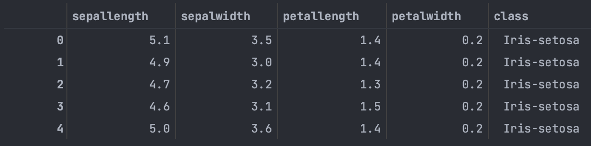
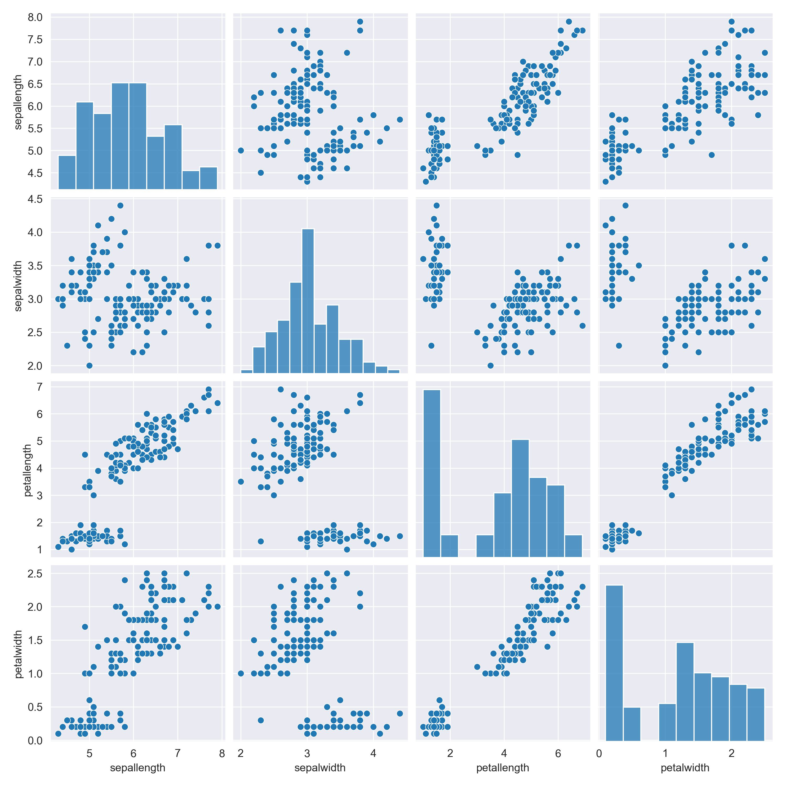
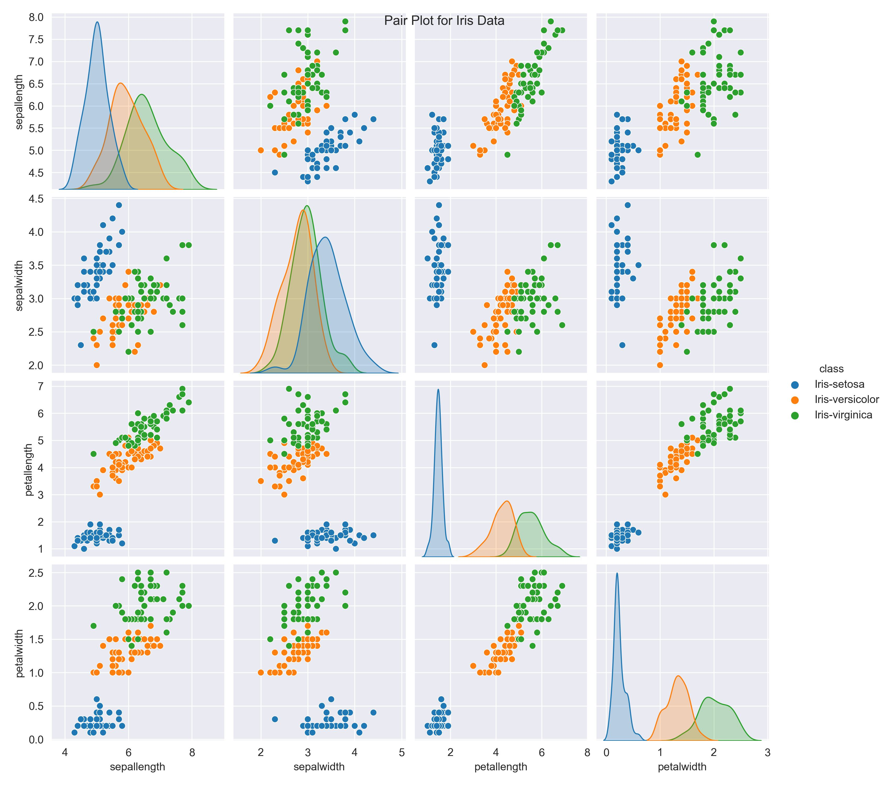
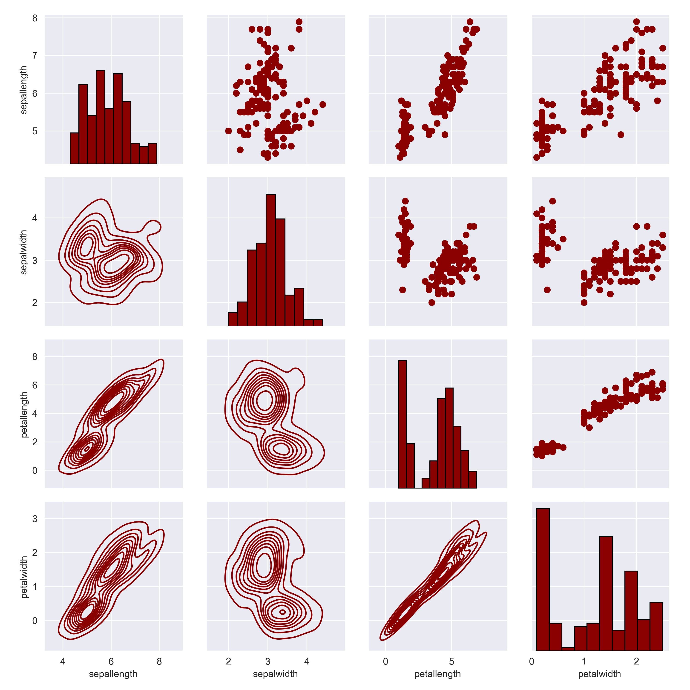

This article introduces the pair-plot and grid-plot methods in seaborn and how to analyze these pictures. A pairs plot allows us to see distributions of single variables and relationships between two variables, and it is an excellent method to identify trends for follow-up analysis.
Pair Plot in seaborn
First of all, let’s take a glance at the dataset. I am using pandas to read the iris dataset, which contains three classes of 50 instances each, where each class refers to a type of iris plant.

The *Iris* flower data set or Fisher’s *Iris* data set is a multivariate data set used and made famous by the British statistician and biologist Ronald Fisher in his 1936 paper The use of multiple measurements in taxonomic problems as an example of linear discriminant analysis.
The data set consists of 50 samples from each of three species of Iris (Iris setosa, Iris virginica and Iris versicolor). Four features were measured from each sample: the length and the width of the sepals and petals, in centimeters. Based on the combination of these four features, Fisher developed a linear discriminant model to distinguish the species from each other. Fisher’s paper was published in the Annals of Eugenics and includes discussion of the contained techniques’ applications to the field of phrenology.[1]
The default pairs plot in seaborn only plots numerical columns, although later, we will use the categorical variables for coloring. Creating the default pairs plot is simple: we load in the seaborn library and call the pairplot function, passing our dataframe to it:
1 | import seaborn as sns |

The pairs plot builds on two basic figures, the histogram and the scatter plot. The histogram on the diagonal allows us to see the distribution of a single variable. At the same time, the scatter plots on the upper and lower triangles show the relationship (or lack thereof) between two variables. We see that petal length and width are positively correlated, indicating that flowers with longer petal lengths tend to hold wider petal widths.
We can make it more valuable by coloring the figures based on a categorical variable such as class. All we need to do is use the hue keyword in the sns.pairplot function call:
1 | sns.pairplot(data, hue='class') |

Now we see that Virginia tends to have the most extended petal length and widest petal width. And also, we can find these parameters’ distribution is normally distributed, which gives a more thorough representation compared to the non-classed pair plot.
PairGrid in seaborn
In contrast to the sns.pairplot function, sns.pairgrid is a class that does not automatically fill in the plots for us. Instead, we create a class instance and map specific functions to the different sections of the grid. To create a PairGrid example with our data, we use the following code, which also limits the variables we will show:
1 | # Create an instance of the PairGrid class. |
If we were to display this, we would get a blank graph because we have not mapped any functions to the grid sections. There are three grid sections to fill in for a PairGrid: the upper triangle, the lower triangle, and the diagonal. To map plots to these sections, we use the grid.map method on the section. For example, to map a scatter plot to the upper triangle, we use the following:
1 | # Map a scatter plot to the upper triangle |
The map_upper method takes in any function that accepts two arrays of variables (such as plt.scatter)and associated keywords (such as color). The map_lower process is the same but fills in the lower triangle of the grid. The map_diag is slightly different because it takes in a function that accepts a single array (remember, the diagonal shows only one variable).
1 | # Map a histogram to the diagonal |

The real benefits of using the PairGrid class come when we want to create custom functions to map different information onto the plot.
Conclusion
Pairs plots are a powerful tool to explore distributions and relationships in a dataset quickly. Seaborn provides a simple default method for making pair plots that can be customized and extended through the Pair Grid class. In a data analysis project, a significant portion of the value often comes not in the flashy machine learning but in the straightforward data visualization. A pairs plot provides a comprehensive first look at our data and is a great starting point in data analysis projects.